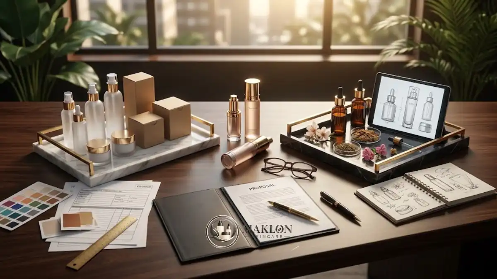

Perbedaan OEM ODM skincare terletak pada sumber formula: pada OEM formula berasal dari brand, sedangkan pada ODM formula dan pengembangan produk berasal dari pabrik.
- OEM berarti pabrik memproduksi sesuai formula dan spesifikasi milik brand.
- ODM berarti pabrik menyediakan formula dan rancangan produk, lalu brand menambahkan merek sendiri.
- OEM memberi kontrol dan diferensiasi lebih besar, tetapi membutuhkan waktu dan biaya awal lebih tinggi.
- ODM lebih cepat dan ringan di awal, tetapi formula bisa serupa dengan brand lain.
- Kejelasan kontrak tentang kepemilikan formula menentukan keamanan jangka panjang brand.
Apa Itu OEM dalam Skincare?
OEM (Original Equipment Manufacturer) dalam skincare adalah model di mana pabrik memproduksi produk berdasarkan formula, bahan, dan spesifikasi yang ditentukan oleh brand pemilik merek.
Pada model ini, brand bertanggung jawab atas konsep dan komposisi produk. Formula dapat dikembangkan oleh formulator internal brand, konsultan independen, atau dipesan secara khusus melalui jasa formulasi custom pabrik.
Pabrik berperan sebagai mitra pelaksana produksi teknis yang mematuhi seluruh instruksi dan spesifikasi baku mutu tersebut secara ketat.
Model maklon skincare OEM sangat cocok untuk brand yang memiliki konsep produk unik, tim riset sendiri, atau kebutuhan diferensiasi pasar yang kuat.
Konsekuensinya, brand menanggung tanggung jawab lebih besar atas keamanan dan kecocokan formula, serta perlu menyiapkan waktu pengembangan laboratorium dan uji stabilitas yang lebih panjang.
Apa Itu ODM dalam Skincare?
ODM (Original Design Manufacturer) dalam skincare adalah model di mana pabrik menyediakan formula dan pengembangan produk siap pakai, lalu brand memberi nama, kemasan, dan identitas merek sendiri.
Pabrik ODM biasanya memiliki katalog formula yang sudah melalui uji stabilitas menyeluruh, seperti serum, pelembap, atau tabir surya.
Brand dapat langsung memilih formula, menyesuaikan variasi tertentu seperti aroma khas, pilihan warna, atau tekstur, lalu segera memulai tahapan produksi. Praktik ini sering disebut juga sebagai private label.
Layanan maklon skincare ODM sangat cocok untuk brand baru yang ingin masuk ke pasar secara cepat dengan modal awal yang lebih terukur.
Batasannya, formula dasar yang sama dapat ditawarkan pabrik kepada klien lain, sehingga diferensiasi produk di mata konsumen sangat bertumpu pada kekuatan merek, desain kemasan, dan kreativitas pemasaran.
Bagaimana Perbandingan OEM dan ODM Skincare Secara Ringkas?
OEM dan ODM berbeda pada sumber formula, kontrol komposisi, waktu peluncuran, biaya awal, dan risiko kepemilikan. Tabel berikut merangkum perbedaan utamanya secara umum.
| Aspek Pembanding | OEM (Original Equipment Manufacturer) | ODM (Original Design Manufacturer) |
|---|---|---|
| Sumber formula | Brand sendiri atau formulator pesanan khusus | Pabrik maklon (katalog formula siap pakai) |
| Kontrol komposisi | Tinggi (bebas menentukan bahan aktif & konsentrasi) | Terbatas pada opsi penyesuaian dari pabrik |
| Waktu peluncuran | Umumnya lebih lama (butuh R&D dan uji klinis) | Umumnya jauh lebih cepat masuk pasar |
| Biaya awal | Umumnya lebih tinggi (biaya R&D & uji terpisah) | Umumnya lebih ringan dan terjangkau |
| Diferensiasi produk | Kuat dan unik (sulit ditiru kompetitor) | Lebih rendah (formula dasar bisa mirip brand lain) |
| Kepemilikan formula | Umumnya milik brand sepenuhnya | Umumnya hak cipta milik pabrik pembuat |
| Target kecocokan | Brand yang ingin konsep eksklusif & pembeda nyata | Brand pemula, UMKM, dan pebisnis modal terbatas |
Ketentuan nyata di lapangan dapat bervariasi antar produsen, sehingga rincian setiap klausul pabrik harus selalu dikonfirmasi dalam dokumen penawaran dan kontrak kerja sama.
Siapa yang Memiliki Formula pada Maklon OEM dan ODM?
Pada OEM formula umumnya dimiliki brand, sedangkan pada ODM formula umumnya dimiliki pabrik, kecuali kontrak menyatakan lain. Kepemilikan formula sebaiknya selalu ditulis eksplisit dalam perjanjian.
Status kepemilikan formula sangat krusial karena menentukan kebebasan pemilik brand untuk memindahkan fasilitas produksi ke pabrik lain di masa mendatang.
Pada model ODM, brand yang ingin pindah produsen mungkin tidak dapat membawa formula tersebut, sehingga terpaksa harus mengembangkan formula baru dari nol.
Sebaliknya pada OEM, brand leluasa membawa formula ke pabrik lain, selama perjanjian kerahasiaan (NDA) dan hak pengembang aslinya diatur secara transparan.
Beberapa pabrik kosmetik juga menawarkan skema formula eksklusif, di mana formula ODM dikunci khusus untuk satu brand dan dijamin tidak ditawarkan kepada klien manapun.
Opsi ini biasanya memerlukan biaya kompensasi tambahan. Perjanjian kerahasiaan, klausul eksklusivitas, dan hak pindah produsen wajib dituntaskan sebelum proses produksi dimulai.
Konsultasikan draf kontrak kerja sama dengan konsultan legal atau penasihat hukum terpercaya bila nilai investasi produksi Anda berskala besar.
Apa Kelebihan dan Kekurangan OEM serta ODM?
Kelebihan OEM adalah kontrol dan diferensiasi tinggi, kekurangannya biaya serta waktu lebih besar. Kelebihan ODM adalah cepat dan hemat di awal, kekurangannya formula berpotensi serupa dengan merek lain.
Model Maklon OEM:
- Kelebihan: Menghasilkan formula unik dan eksklusif, kendali penuh atas pemilihan bahan baku, serta fleksibilitas tinggi bila ingin berpindah pabrik.
- Kekurangan: Membutuhkan keahlian formulasi mendalam, proses waktu pengembangan R&D lebih panjang, dan beban tanggung jawab keamanan formula berada di pihak brand.
Model Maklon ODM:
- Kelebihan: Menggunakan formula yang sudah teruji stabil, proses perizinan jauh lebih cepat, biaya modal awal lebih ringan, dan risiko kegagalan pengembangan rendah.
- Kekurangan: Diferensiasi komposisi terbatas di pasar, ketergantungan operasional tinggi pada pabrik mitra, dan formula tidak dapat dialihkan ke fasilitas pabrik lain.
Penting dicatat bahwa kedua model sama-sama wajib melalui notifikasi kosmetika BPOM dan, sejak 17 Oktober 2026, wajib bersertifikat halal resmi untuk seluruh produk kosmetik yang beredar.
Model Mana yang Cocok untuk Brand Skincare Baru?
Brand skincare baru dengan modal dan pengalaman terbatas umumnya cocok memulai dengan ODM. Brand dengan konsep unik dan tim formulasi sendiri umumnya lebih cocok memilih OEM.

Sebelum mengambil keputusan akhir, pertimbangkan empat pertanyaan strategis berikut:
- Apakah brand Anda memiliki tim formulator internal atau konsultan formulasi independen?
- Seberapa penting formula yang benar-benar unik bagi strategi positioning merek di mata konsumen?
- Berapa besar alokasi modal dan waktu tunggu yang tersedia sebelum peluncuran produk perdana?
- Seberapa besar risiko operasional ketergantungan bisnis Anda pada satu fasilitas pabrik tertentu?
Dalam praktiknya, jalur bertahap sering menjadi strategi paling efektif: brand memulai debutnya dengan formula ODM untuk menguji respon pasar, lalu bertransisi ke OEM setelah volume penjualan stabil.
Pendekatan bertahap ini menekan risiko kerugian modal di awal sekaligus membuka ruang ekspansi diferensiasi produk di masa depan. Estimasi rincian modal untuk kedua model dapat dipelajari di panduan biaya maklon skincare.
Mengapa Pilihan Pabrik Penting bagi Model OEM maupun ODM?
Pilihan pabrik penting karena kualitas formulasi, kepatuhan CPKB, dan transparansi menentukan keamanan produk, apa pun model OEM atau ODM yang dipilih brand.
Data industri menunjukkan luasnya opsi manufaktur kosmetik saat ini. Berdasarkan data BPOM yang dikutip Kemenperin pada Mei 2026, terdapat 1.684 industri kosmetik di Indonesia, dengan sekitar 85 persen merupakan industri kecil dan menengah (IKM).
Variasi skala fasilitas dan spesialisasi ini menuntut pemilik brand untuk menyeleksi mitra manufaktur secara cermat dan teliti.
Pastikan Anda memeriksa keabsahan sertifikat CPKB pabrik, portofolio pengalaman pada kategori produk sejenis, kesiapan fasilitas jaminan halal, dan transparansi isi kontrak.
Panduan menyeluruh mengenai tahapan dan seleksi mitra pabrik tersedia di artikel utama maklon skincare.
Kesimpulan & Langkah Praktis
OEM unggul dalam kontrol formula dan diferensiasi pasar, sedangkan ODM unggul dalam kecepatan peluncuran dan efisiensi biaya awal.
Pilihlah model maklon berdasarkan kapasitas modal, ketersediaan tim formulasi, dan tujuan positioning brand Anda, serta pastikan klausul kepemilikan formula tertulis tegas di dalam surat kontrak kerja sama.
Artikel ini bersifat informasi umum, dan ketentuan nyata dapat bervariasi antar fasilitas pabrik maklon kosmetik.